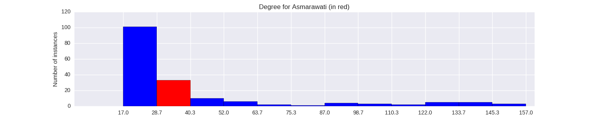

Quantiative Wayang Dictionary
Asmarawati

Terms of address: Endang
Type: Human
Origin: India
Notes on the Sanskrit version: Not found in the Indian Mahabharata.
Alternative names: Jimambang
Description in the Javanese version: According to Babad Wanamarta, she is the daughter of Begawan Wilawuk, a demon king. She is also known as Jimambang and marries Arjuna. The Ensiklopedi Wayang Purwa describes Asmarawati as the daughter of Prabu [Suryaasmara] and the wife of Bambang [Sumitra], Arjuna's son. The same source describes Jimambang as a separate character.
Found in the follwing lakon (stories):
Family relationships
Father: Wilawuk
Consorts: Arjuna
Offspring: Kumaladewa, Kumalasekti
More information
Sources: Ensiklopedi Wayang Purwa, p. 66; 257
Network measurements for Asmarawati
| Measurement | Value | |
|---|---|---|
| Degree | 0.360211776163 |  |
| Weighted Degree | 36.0 |  |
| Closeness Centrality | 59.0 |  |
| Betweeness Centrality | 0.603448275862 |  |
| Eigenvector Centrality | 506.0 |  |
{kind=link}
Characters in the same adegan as Asmarawati
| Character | Link weight |
|---|---|
| Character | Link weight |